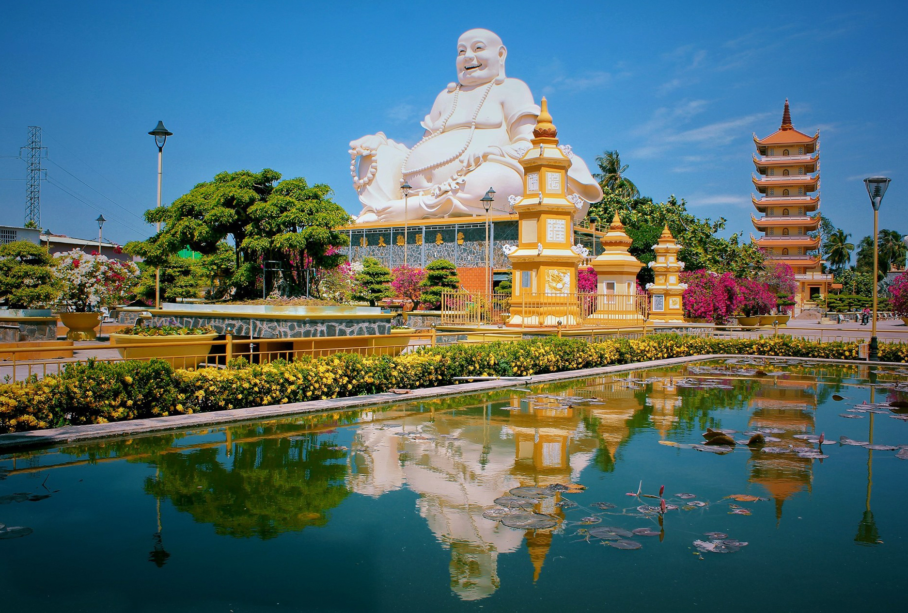

Những Địa Điểm Du Lịch 🛫
1.Tiền Giang

Tiền Giang là một tỉnh ven biển thuộc đồng bằng sông Cửu Long, miền Nam, Việt Nam.
Tỉnh nằm trong Vùng kinh tế trọng điểm phía Nam.
Tỉnh lỵ của tỉnh là Thành phố Mỹ Tho, nằm cách Thành phố Hồ Chí Minh 70 km về hướng Tây Nam và cách Thành phố Cần Thơ 90 km về hướng Đông Bắc theo đường Quốc lộ 1.
Tiền Giang có đường bờ biển dài 32 km với địa hình tương đối bằng phẳng, đất phù sa trung tính, ít chua dọc sông Tiền,sông Vàm Cỏ và sông Soài Rạp,phần dọc sông Tiền chiếm khoảng 53% diện tích toàn tỉnh, thích hợp cho nhiều loại cây trồng và vật nuôi.
Tiền Giang là tỉnh có nhiều tiềm năng về du lịch.
Tiền Giang mang tính chất nội chí tuyến - cận xích đạo và khí hậu nhiệt đới gió mùa nên nhiệt độ bình quân cao và nóng quanh năm.
Nhiệt độ bình quân trong năm là 27oC - 27,9oC. Với 2 mùa rõ rệch là mùa mưa và mùa khô.
Tiền Giang là tỉnh có nhiều tiềm năng về du lịch.
Hàng năm, lượng du khách đến Tiền Giang đều tăng.
Trong năm 2009, lượng khách tham quan Tiền Giang vẫn đạt 866.400 lượt người.
Thế mạnh của du lịch chủ yếu nhờ vào các di tích văn hóa lịch sử và sinh thái như di tích văn hóa Óc Eo, Gò Thành từ thế kỷ I đến thế kỷ VI sau công nguyên, các di tích lịch sử Trận Rạch Gầm – Xoài Mút, di tích Ấp Bắc, lũy Pháo Đài, và nhiều lăng mộ, đền chùa.Những địa điểm nổi tiếng như : Chùa Vĩnh Tràng,..
Tiền Giang một nơi du lịch cũng nổi tiếng không kém gì những nơi khác tuy không có nét vẻ đặc trưng riêng như Tiền Giang vẫn có nhiều khách du lịch muốn đi và trãi nghiệm thử.

Chùa Vĩnh Tràng
2. Thành Phố Cần Thơ

Cần Thơ là một thành phố trực thuộc trung ương của Việt Nam,
là thành phố sầm uất và phát triển nhất ở Đồng bằng sông Cửu Long.
Cần Thơ hiện là đô thị loại I, là trung tâm kinh tế, văn hóa, xã hội, y tế, giáo dục và thương mại của vùng Đồng bằng sông Cửu Long,
là thành phố trung tâm cấp vùng và cấp quốc gia cùng với Đà Nẵng, Hải Phòng.
Thành phố Cần Thơ nằm bên hữu ngạn sông Hậu, thuộc vùng đồng bằng sông Cửu Long.
Cần Thơ là thủ phủ và là đô thị hạt nhân của miền Tây Nam Bộ từ thời Pháp thuộc, nay tiếp tục là trung tâm kinh tế của vùng Đồng bằng Sông Cửu Long. Ngoài đặc trưng về địa lý là đầu mối giao thông quan trọng giữa các tỉnh trong khu vực, thành phố Cần Thơ còn được biết đến như một đô thị miền sông nước.
Thành phố có hệ thống sông ngòi chằng chịt, diện tích vườn cây ăn trái và đồng ruộng rộng lớn, nổi tiếng với Bến Ninh Kiều, Chợ nổi Cái Răng một nét sinh hoạt đặc trưng văn hóa Nam Bộ.
Năm 2019, du lịch Cần Thơ đón 8,8 triệu lượt khách, tăng 4,6% so cùng kỳ năm 2018.
Khách lưu trú đạt trên 3 triệu lượt, tăng 13,1%, trong đó lưu trú quốc tế đạt trên 409.000 lượt khách, tăng 12,4% so với cùng kỳ năm.
Tổng doanh thu từ du lịch đạt trên 4.435 tỉ đồng, tăng 17,2% so với cùng kỳ năm.
Thành Phố Cần Thơ là điểm du lịch quen thuộc với dân xê dịch bởi vẻ đẹp đậm chất miền Tây, vừa mộc mạc, vừa trữ tình.Những địa điểm nổi tiếng như : Bến Ninh Kiều ,...
Nét hiện đại của thành phố xen lẫn hơi thở mộc mạc những giá trị văn hóa lâu đời là điều khiến du khách vương vấn niềm thương nhớ với mảnh đất Tây đô.
Bến Ninh Kiều
3. Thành Phố Cà Mau

Cà Mau là một tỉnh ven biển ở cực nam của Việt Nam, nằm trong khu vực Đồng bằng sông Cửu Long.
Toàn bộ địa phận Cà Mau nằm trên Bán đảo Cà Mau.
Cà Mau là một vùng đất trẻ, mới được khai phá khoảng trên 300 năm.
Vùng đất Cà Mau ngày xưa được Mạc Cửu dẫn người Hoa đến khai phá.
Qua nhiều lần thay đổi về hành chính, đến ngày 1 tháng 1 năm 1997, tỉnh Cà Mau được tái lập theo Nghị quyết của Quốc hội khóa IX, kỳ họp thứ 10, ngày 6 tháng 11 năm 1996 về việc điều chỉnh địa giới hành chính, chia tách tỉnh Minh Hải thành tỉnh Cà Mau và tỉnh Bạc Liêu.
Tỉnh Cà Mau là mảnh đất tận cùng của tổ quốc với 3 mặt tiếp giáp với biển. Cà Mau là vùng đất thấp, thường xuyên bị ngập nước. Cà Mau có 5 nhóm đất chính gồm: đất phèn, đất than bùn, đất bãi bồi, đất mặn và đất kênh rạch.
Do đặc điểm tự nhiên, Cà Mau là tỉnh cuối cùng nơi cực Nam Tổ quốc, Mũi Cà Mau có cột mốc tọa độ quốc gia nên du lịch địa lý rất hấp dẫn du khách trong và ngoài nước.
Dưới tán rừng là những đầm tôm, ruộng lúa cùng các vườn cây ăn trái, sân chim tự nhiên, với nhiều loại chim quý hiếm… tạo nên các tuyến du lịch sinh thái hấp dẫn.
Các đảo Hòn Khoai, Hòn Chuối, Hòn Đá Bạc, Hòn Buông, bãi Khai Long… là những nơi còn giữ được vẻ đẹp nguyên thủy của tự nhiên.Những địa điểm du lịch như : Hòn Đá Bạc ,...
Cà Mau là Vùng đất Miền Tây thơ mộng, hữu tình với những danh lam thắng cảnh xinh đẹp làm ngất lòng du khách, luôn mang một sự thu hút riêng để bất cứ ai cũng muốn chiêm ngưỡng bức tranh hài hòa của rừng bạt ngàn.
Hòn Đá Bạc
4. Thành Phố Bạc Liêu

Bạc Liêu là một tỉnh thuộc duyên hải thuộc vùng Đồng bằng sông Cửu Long, nằm trên bán đảo Cà Mau, miền đất cực nam của Việt Nam.
Bạc Liêu có nhiều dân tộc khác nhau sinh sống như người Hoa, người Việt, người Khmer, người Chăm... Người Bạc Liêu có phong cách phóng khoáng, đặc trưng của vùng Nam Bộ.
Bạc Liêu có Công tử Bạc Liêu lừng danh một thuở giàu có và chịu chơi, ngoài ra vùng đất này còn gắn liền với tên tuổi của nhạc sĩ Cao Văn Lầu và bài Dạ cổ hoài lang đặt nền móng cho sự phát triển của nền cổ nhạc Nam Bộ
Bên cạnh những di tích vật thể thì Bạc Liêu còn độc đáo bởi những giá trị văn hóa phi vật thể như các lễ hội, phong tục, tập quán cổ truyền.
Đó là các lễ hội Kỳ yên, lễ hội Phật giáo Thượng Ngươn, Trung Ngươn, Hạ Ngươn; lễ hội Chôl Chnăm Thmây, Oóc-om-bóc, Đôn-ta của người Khmer; lễ Giỗ tổ cổ nhạc, lễ cúng Thanh minh...
Văn hóa ẩm thực cũng tạo nên nét đặc trưng cho vùng đất cuối trời Nam này. Ẩm thực Bạc Liêu mang sắc thái dân tộc và yếu tố bản địa vùng miền.
Thế mạnh du lịch của Bạc Liêu là du lịch sinh thái, du lịch biển với những cảnh quan thiên nhiên độc đáo như vườn chim, vườn nhãn , Cánh Đồng Điện Gió Bạc Liêu,...
Bạc Liêu là Một sức hấp dẫn rất Bạc Liêu sẽ không chỉ dừng lại ở những địa điểm du lịch, những nét văn hóa phi vật thể độc đáo mà còn quyến rũ bởi văn hóa ứng xử, văn hóa giao tiếp, văn hóa làm du lịch của Bạc Liêu.
Du khách về thăm Bạc Liêu hãy cảm nhận sức hấp dẫn, sự quyến rũ ấy bằng chính giác quan và cảm quan của mình!
Cánh Đồng Điện Gió Bạc Liêu
5. Tỉnh Vĩnh Long
Vĩnh Long là một tỉnh thuộc vùng Đồng bằng sông Cửu Long, Việt Nam.
Tỉnh Vĩnh Long có dạng địa hình khá bằng phẳng với độ dốc nhỏ hơn 2°, có cao trình khá thấp so với mực nước biển,
Với dạng địa hình đồng bằng ngập lụt cửa sông, tiểu địa hình của tỉnh có dạng lòng chảo ở giữa trung tâm tỉnh và cao dần về 2 hướng bờ sông Tiền, sông Hậu, sông Mang Thít và ven các sông rạch lớn
Vĩnh Long là tỉnh đặc biệt nghèo về tài nguyên khoáng sản, cả về số lượng lẫn chất lượng. Tỉnh chỉ có nguồn cát và đất sét làm vật liệu xây dựng, đây là nguồn thu có ưu thế lớn nhất của tỉnh Vĩnh Long so với các tỉnh trong vùng về giao lưu kinh tế và phát triển thương mại - du lịch.
Tỉnh Vĩnh Long nằm giữa hai con sông lớn nhất của đồng bằng sông Cửu Long, nên có nguồn nước ngọt quanh năm, đó là tài nguyên vô giá mà thiên nhiên ban tặng.
Do địa thế và lịch sử hình thành, từ ba dân tộc Kinh, Khmer, Hoa cùng sinh sống lâu đời ở đây đã hòa quyện và tạo nên một nền văn hóa đặc trưng cho vùng đất này
Vĩnh Long cũng là nơi có nhiều di tích lịch sử văn hóa như: thành Long Hồ, Công Thần Miếu Vĩnh Long, đình Tân Giai, đình Tân Hoa, Văn Thánh Miếu Vĩnh Long, Khu tưởng niệm cố Chủ tịch Hội đồng Bộ trưởng Phạm Hùng.Những địa điểm du lịch như : Khu du lịch Vinh Sang,...
Vĩnh Long là nơi không rừng, không núi, không biên giới, không biển,...những dãy núi cao mang vẻ đẹp hùng vĩ, không có nhiều danh lam thắng cảnh hay non nước hữu tình, không có rừng vàng, biển bạc hay những eo biển dài bất tận với bờ cát trắng pha lê,… như những tỉnh, thành khác.
Khu du lịch Vinh Sang
6. Tỉnh Sóc Trăng
Sóc Trăng là một tỉnh ven biển, nằm trong vùng hạ lưu Nam sông Hậu thuộc đồng bằng sông Cửu Long, Việt Nam.
Tỉnh Sóc Trăng nằm ở cửa Nam sông Hậu, cách Thành phố Hồ Chí Minh khoảng 231 km, cách Cần Thơ 62 km, nằm trên tuyến Quốc lộ 1 nối liền các tỉnh Hậu Giang, Thành phố Cần Thơ, Bạc Liêu, Cà Mau.
Địa hình trong tỉnh Sóc Trăng thấp và tương đối bằng phẳng, có dạng lòng chảo, cao ở phía sông Hậu và biển Đông thấp dần vào trong, vùng thấp nhất là phía Tây và Tây Bắc.
Sóc Trăng có hệ thống kinh rạch chịu ảnh hưởng của chế độ thủy triều ngày lên xuống 2 lần, mực triều dao động trung bình từ 0,4 m đến 1 m.
Sóc Trăng nằm trong vùng khí hậu nhiệt đới gió mùa chịu ảnh hưởng gió mùa, chia thành mùa là mùa khô và mùa mưa.
Sóc Trăng là địa bàn cư trú của ba dân tộc chính là dân tộc Kinh (774.807 người), Hoa, Khmer cùng với nhiều dân tộc khác.
Với một nền văn hóa đặc sắc và khá riêng biệt mà có thể gọi là: "văn hoá xứ giồng", thể hiện qua các mặt trong đời sống hằng ngày của người Sóc Trăng, từ ngôn ngữ, mối quan hệ xã hội, tên đất, tên làng đến tín ngưỡng tôn giáo, ẩm thực và lễ hội của người Kinh, Hoa, Khmer và số ít người Chăm. Những địa điểm mà khách du lịch nên đi qua như : Chùa La Hán,...
Sóc Trăng được biết đến là một tỉnh thuộc đồng bằng sông Cửu Long sở hữu nhiều địa điểm du lịch, món ăn và nền văn hóa độc đáo. Sóc Trăng là một trong những địa điểm thu hút du lịch vì có sự giao thoa giữa nhiều văn hóa với nhau.
Chùa La Hán
7. Tỉnh Bến Tre
Bến Tre là là một tỉnh thuộc vùng Đồng bằng sông Cửu Long, Việt Nam.
Bến Tre là đơn vị hành chính Việt Nam đông thứ 28 về dân số, xếp thứ 46 về tổng sản phẩm trên địa bàn (GRDP), xếp thứ 56 về GRDP bình quân đầu người, đứng thứ 48 về tốc độ tăng trưởng GRDP.
Bến Tre cũng là quê hương của Đạo Dừa, với biệt danh là "Xứ Dừa".
Từ thời Chiến tranh Việt Nam, Bến Tre được coi là "quê hương của Phong trào Đồng khởi", mở đầu cho cao trào đấu tranh vũ trang của Mặt trận Dân tộc giải phóng miền Nam chống chính quyền Ngô Đình Diệm, tiêu biểu nhất là trong năm 1960
Bến Tre cũng có diện tích trồng lúa khá lớn, do phù sa sông Cửu Long bồi đắp, đặc biệt là ở Hàm Luông.
Cây lương thực chính là lúa, hoa màu phụ cũng chiếm phần quan trọng là khoai lang, ngô, và các loại rau.
Bến Tre có điều kiện thuận tiện để phát triển du lịch sinh thái, bởi ở đó còn giữ được nét nguyên sơ của miệt vườn, giữ được môi trường sinh thái trong lành trong màu xanh của những vườn dừa, vườn cây trái rộng lớn.Những địa điểm du lịch nổi tiếng như :Làng hoa cảnh chợ Lách,...
Đối với những người con Bến Tre, cây dừa không chỉ là sản vật quê hương mà nó còn chứa đựng cả một bầu trời tuổi thơ đầy kỷ niệm. Chiêm ngưỡng hình ảnh hàng dừa xanh rì xen giữa ánh nắng ban mai trong vắt khiến những ai đang xa quê đều bồi hồi một nỗi niềm khó tả - khiến cho bao nhiêu người cũng muốn ao ước đặt chân xuống tham quan ở nơi đầy sắc đẹp giản dị.
Làng Hoa Cảnh Chợ Lách
8. Tỉnh Kiên Giang
Kiên Giang là một tỉnh ven biển thuộc vùng Đồng bằng sông Cửu Long, Nam Bộ.
Phần lớn diện tích Kiên Giang ngày nay bao gồm thành phố Rạch Giá và toàn bộ tỉnh Hà Tiên cũ.
Đây là tỉnh có diện tích lớn nhất vùng Tây Nam Bộ và lớn thứ hai ở Nam Bộ (sau tỉnh Bình Phước).
Năm 2018, Kiên Giang là đơn vị hành chính Việt Nam đông thứ 11 về số dân, xếp thứ 19 về Tổng sản phẩm trên địa bàn (GRDP), xếp thứ 31 về GRDP bình quân đầu người, đứng thứ 39 về tốc độ tăng trưởng GRDP.
Kiên Giang nằm tận cùng phía Tây Nam của Việt Nam, trong đó lãnh thổ bao gồm đất liền và hải đảo.
Kiên Giang cũng là tỉnh nằm trong ngư trường Kiên Giang - Cà Mau. Đây là ngư trường lớn nhất nước ta.
Kiên Giang nằm tận cùng về phía tây nam của Việt Nam, nơi giao thoa văn hóa của nhiều vùng miền cả nước, bản sắc văn hoá tỉnh nhà cũng vì thế mà rất phong phú, đa dạng, thể hiện qua các lĩnh vực văn học, nghệ thuật, ẩm thực, lễ hội, làng nghề truyền thống...
Văn hóa ẩm thực ở đây cũng rất phong phú, đa dạng với hàng trăm món ăn các loại với các đặc sản như Cá nhồng, Nước mắm Phú Quốc, Cháo môn, Sò huyết Hà Tiên, Bún cá Kiên Giang...
Hằng năm trên địa bàn tỉnh diễn ra nhiều lễ hội, nhưng đặc sắc nhất là lễ hội anh hùng dân tộc Nguyễn Trung Trực diễn ra vào tháng tháng Tám âm lịch thu hút hàng ngàn lượt khách trong và ngoài tỉnh đến tham gia.
Những địa điểm nổi tiếng như : Đảo Hải Tặc,...
Khu dự trữ sinh quyển ven biển và biển đảo Kiên Giang đã được UNESCO công nhận là khu dự trữ sinh quyển thế giới.
Đảo Hải Tặc
9. Trà Vinh

Trà Vinh là một tỉnh ven biển thuộc vùng Đồng bằng sông Cửu Long, Việt Nam.
Trà Vinh nằm ở phần cuối cù lao kẹp giữa sông Tiền và sông Hậu.
Địa hình chủ yếu là những khu đất bằng phẳng với độ cao trên dưới 1m so với mặt biển.
ở vùng đồng bằng ven biển nên có các giồng cát, chạy liên tục theo hình vòng cung và song song với bờ biển.
Càng về phía biển, các giồng này càng cao và rộng lớn.
Do sự chia cắt bởi các giồng và hệ thống trục lộ, kinh rạch chằng chịt, địa hình toàn vùng khá phức tạp.
Các vùng trũng xen kẹp với các giồng cao, xu thế độ dốc chỉ thể hiện trên từng cánh đồng
Nằm trong vùng đồng bằng sông Cửu Long, tỉnh Trà Vinh cũng có những thuận lợi chung như: có điều kiện ánh sáng bức xạ dồi dào, nhiệt độ cao và ổn định
Năm 2018, Trà Vinh là đơn vị hành chính Việt Nam đông thứ 42 về số dân, xếp thứ 43 về Tổng sản phẩm trên địa bàn (GRDP), xếp thứ 36 về GRDP bình quân đầu người, đứng thứ 14 về tốc độ tăng trưởng GRDP.
Tuy là vùng đất trẻ nhưng Trà Vinh có kho tàng văn hóa đa dạng, đặc biệt là văn hóa vật thể và phi vật thể của người Khmer.
Người Khmer còn xây dựng trên địa bàn Trà Vinh nhiều chùa có kiến trúc độc đáo và hòa quyện thiên nhiên, tiêu biểu là chùa Âng, toạ lạc trên khu đất rộng 4ha, trong thắng cảnh Ao Bà Om.
Trà Vinh có một số đồ ăn, thức uống đã trở thành các đặc sản địa phương như cốm dẹp trộn dừa kiểu Khmer.
Trà Vinh là một thành phố được xem là mang nhiều phong tục tập quán của người Khmer ở nước ta - chính nhờ sự phát triễn triễn khai những phong tục đó nên đã không ngừng lôi kéo khách du lịch .
Ao Bà Om - Truyền thuyết của người Khmer
10.Đồng Tháp

Đồng Tháp là một tỉnh thuộc vùng Đồng bằng sông Cửu Long, Việt Nam.
Tỉnh Đồng Tháp được thành lập trên cơ sở hợp nhất tỉnh Kiến Phong và tỉnh Sa Đéc vào năm 1976.
Đồng Tháp là nơi sông Tiền chảy vào địa phận Việt Nam, có đường biên giới giáp với Campuchia có chiều dài hơn 50 km với 4 cửa khẩu, trong đó có 2 cửa khẩu quốc tế là Thường Phước và Dinh Bà.
Đồng Tháp nổi tiếng với những ruộng sen, hiện diện khắp nơi ở Đồng Tháp.
Ngó và hạt sen trở thành đặc sản của vùng này.
Ngoài ra, Đồng Tháp rất thích hợp cho loại hình du lịch sinh thái.
Địa hình Đồng Tháp tương đối bằng phẳng với độ cao phổ biến 1–2 mét so với mặt biển.
Địa hình được chia thành 2 vùng lớn là vùng phía bắc sông Tiền và vùng phía nam sông Tiền.
Đồng Tháp nằm trong vùng khí hậu nhiệt đới, đồng nhất trên địa giới toàn tỉnh, khí hậu ở đây được chia làm 2 mùa rõ rệt là mùa mưa và mùa khô.
Những đặc điểm về khí hậu như trên tương đối thuận lợi cho phát triển nông nghiệp toàn diện.
Đất đai của Đồng Tháp có kết cấu mặt bằng kém bền vững lại tương đối thấp, nên làm mặt bằng xây dựng đòi hỏi kinh phí cao, nhưng rất phù hợp cho sản xuất lượng thực
Tỉnh Đồng Tháp có nhiều điểm du lịch và di tích lịch sử, trong đó có 1 di tích quốc gia đặc biệt là khu di tích gò tháp, có 12 di tích lịch sử văn hóa cấp quốc gia và 49 di tích cấp tỉnh.
Giờ đây về thăm Đồng Tháp du khách như trở về với cội nguồn thiên nhiên bởi bầu không khí trong lành, mát mẻ của những cánh đồng lúa phì nhiêu.
Những địa điểm tham quan như : Khu Di tích Gò Tháp,...
Khu Di tích Gò Tháp